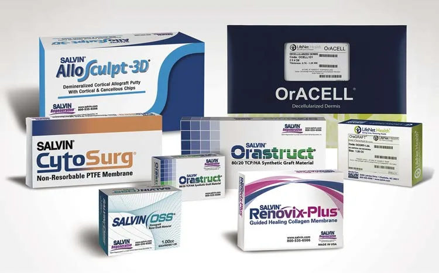
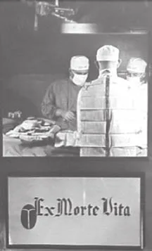

نسخه استخراجشده؛ ترجمه یا تأیید علمی انجام نشده است. وضعیت: captured
این را روشن بدان: انتخاب ممبران بریری که بهترین نتیجهی بالینی مطلوب را فراهم کند، بر عهدهی درمانگر است. یعنی قاعدهی واحدی وجود ندارد — و همین مسئولیت انتخاب را جدی میکند.
چهار پرسش که تصمیم را میسازند:
۱. نقص چقدر بزرگ است و چند دیواره دارد؟ نقص بزرگتر با دیوارهی کمتر، مادهی فعالتر و ممبران بادوامتر میخواهد — همان طیفی که در یونیت ۱۴ دیدی.
۲. دورهی ترمیم چقدر است؟ ماندگاری ممبران باید با آن بخواند. کلاژن گسترشیافته با جذب ۴ تا ۶ ماه برای نقصهای بزرگتر ساخته شده.
۳. آیا بستهشدن اولیه ممکن است؟ اگر نه، d-PTFE که میتواند اکسپوز بماند، گزینهای است که هزینهی پیش بردن فلپ را حذف میکند.
۴. آیا جراحی دوم پذیرفتنی است؟ ممبران غیرجذبشونده کنترل بیشتری میدهد ولی برداشتنش موربیدیتی و خطر آلودگی بافت بازسازیشده به همراه دارد.
و دربارهی افزودنیها: PRP و سایر فرآوردههای خون خود بیمار میتوانند اثر استئواینداکتیو DFDBA را تقویت کنند — ولی بهتنهایی رشد استخوان تازه را تحریک نمیکنند. یعنی افزودنی، ضریب است نه پایه: چیزی را که وجود ندارد تقویت نمیکند.

چند قاعده که فراتر از انتخاب بالینیاند و به ایمنی و مسئولیت مربوط میشوند:
مصرف تکبیمار. تمام مواد جایگزین استخوان و ممبرانها، اگر جداگانه بستهبندی شده باشند، برای مصرف تکبیمار تعیین شدهاند. اصطلاح ممکن است «یکبارمصرف» باشد، و همین قصد برای زنوگرافت و آلوپلاست هم برقرار است.
پیامد عملیاش روشن است: باقیماندهی یک بسته را برای بیمار بعدی نگه ندار — حتی اگر ماده ظاهراً دستنخورده باشد.
مراجعه به دستورالعمل مصرف. توصیهی همیشگی: همیشه به سند دستورالعمل مصرف همراه هر ماده یا ممبران مراجعه کن. این توصیهی تشریفاتی نیست: مواد مختلف زمان جذب، شرایط نگهداری و روش آمادهسازی متفاوتی دارند.
وضعیت نظارتی آلوگرافت. فرآوردههای آلوگرافت وقتی بیش از حداقل فرآوری شده باشند، وسیلهی پزشکی محسوب میشوند. و آلوگرافتها روشهای استریلیزاسیون معمول فلز و پلاستیک را تحمل نمیکنند، چون خواص مکانیکی و زیستی لازم را از بین میبرد.
جمعبندی این یونیت: انتخاب ماده و ممبران، تطبیق چند بازهی زمانی با هم است — سرعت جذب ماده، ماندگاری ممبران، و مدت ترمیم نقص. و در کنارش یک تطبیق فضایی: ماکروتخلخل بیش از ۱۰۰ میکرومتر تا عروق بتوانند وارد شوند. مادهی درست با زمانبندی نادرست، همانقدر شکست میخورد که مادهی نادرست.
